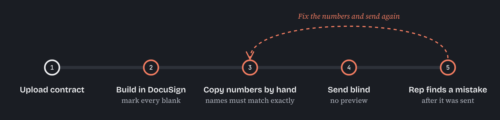
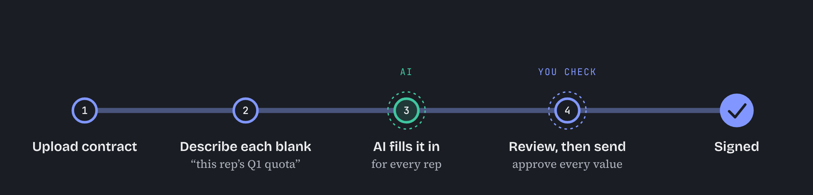

Every year, companies send each of their salespeople a pay agreement to sign. The wording is the same for everyone, but the numbers aren't: each person has their own quota, territory and target pay. One admin might send a few hundred of these at the start of the year, then more whenever someone joins, changes teams or gets a new target.
I redesigned how those contracts get made and sent. This is a short write-up of what was wrong, what we built, and a few decisions I'd make again.
How it used to work
Contracts were built in DocuSign, embedded inside our app. Admins marked the blanks there, downloaded a list of field names, and then went looking for every salesperson's numbers. Those went into a spreadsheet, which was uploaded back.
A value only reached the contract if the spreadsheet column matched the field name exactly. There was no preview. Mistakes usually showed up after sending, often spotted by the salesperson, and the fix was to cancel the contract and send a new one.

The odd part was that most of those numbers already lived in Everstage. Admins weren't creating anything. They were looking it up by hand, a few hundred times over.
The idea
Looking things up is something AI does reasonably well, as long as someone checks the result. So the admin describes what each blank should contain, the AI finds the value for every person, and the admin reviews everything before it goes out.

How it works
Step 1Describe each blank
The admin uploads the contract and, for each blank, writes what belongs there in plain words, like “this rep's Q1 quota”. Typing / lets them point at where the number lives, so the AI isn't guessing. Any blank can also be filled in by hand or set to one value for everyone.

Step 2Try it on a few people first
Before sending to everyone, the admin picks a handful of people and generates a preview. Anything the AI couldn't find is marked as missing rather than guessed. When something is ambiguous, like a person with two quotas because they changed teams, it asks, and the admin answers in plain words.

Step 3Review everyone in one table
At send time, every value for every person sits in one table. Each cell shows whether the AI filled it or the admin changed it, and missing values stand out. Fixes happen right in the cell, or by pasting from a spreadsheet if that's quicker. Sending with a blank is still possible, but the admin is warned first.

Step 4Follow through
After sending, the admin can see who has signed and who it's waiting on: the salesperson, or their manager if they sign second. Reminders go out on the schedule the admin set, and signing happens inside Everstage, so there's no DocuSign step anymore.

Deciding what the AI does
Early on, I listed everything an admin did to send contracts and asked one question of each task: is this looking something up, or a decision someone is accountable for?
The AI does
- Find each person's quota, territory and pay
- Work out where each number lives, once per contract
- Fill hundreds of contracts the same way
- Flag anything it can't find
The admin does
- Decide what each blank should say
- Check every value
- Fix anything that looks off
- Press send
A couple of smaller decisions came out of that.
The AI works out how to find each value once per contract, then reuses it. The same contract gives the same answer every time. Here, that matters more than being clever.
It never fills a gap with a guess. A blank marked “missing” is a little annoying. A wrong number in a signed pay agreement is much worse.
What changed
Admins now describe a contract once instead of rebuilding a spreadsheet every time they send it. They see every value before anything goes out, and the whole thing, from building the contract to getting it signed, happens in Everstage.
What I took away
Getting the AI to produce an answer turned out to be the easy part. Most of the design work was helping people check it.